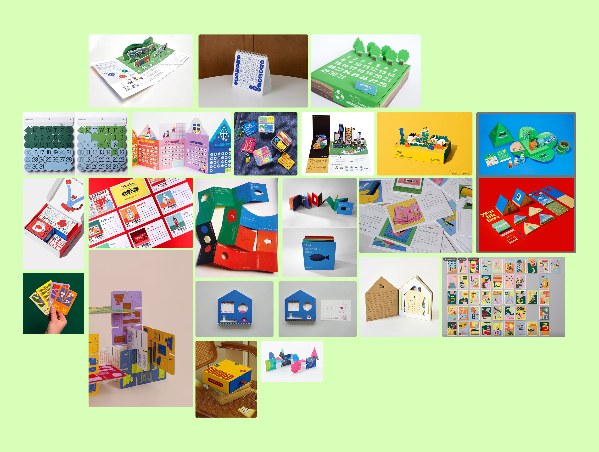
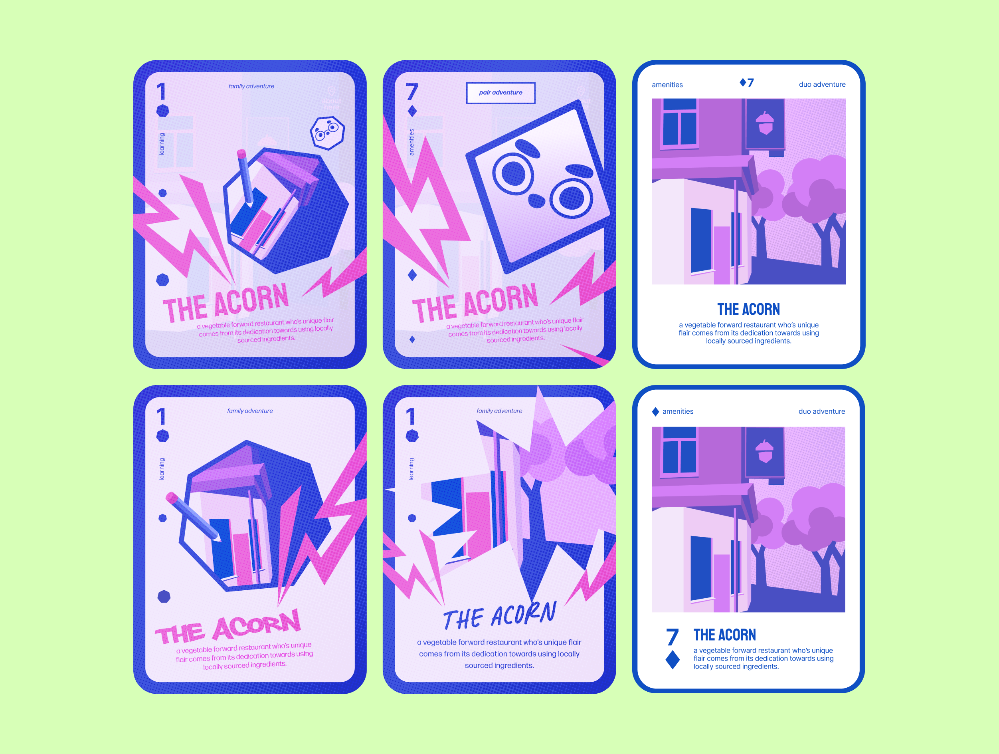
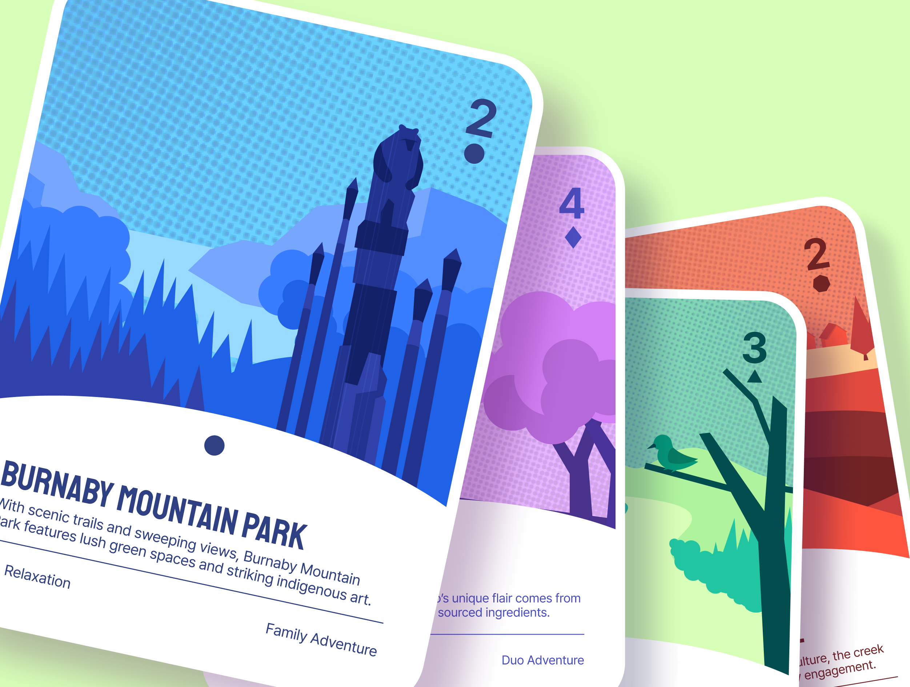
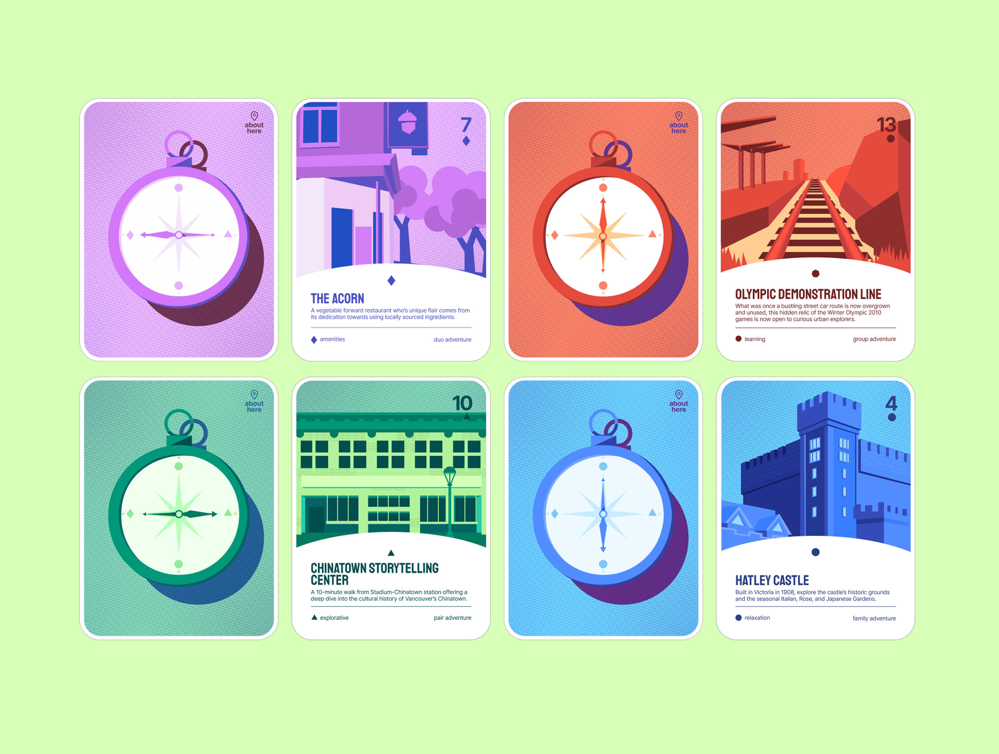
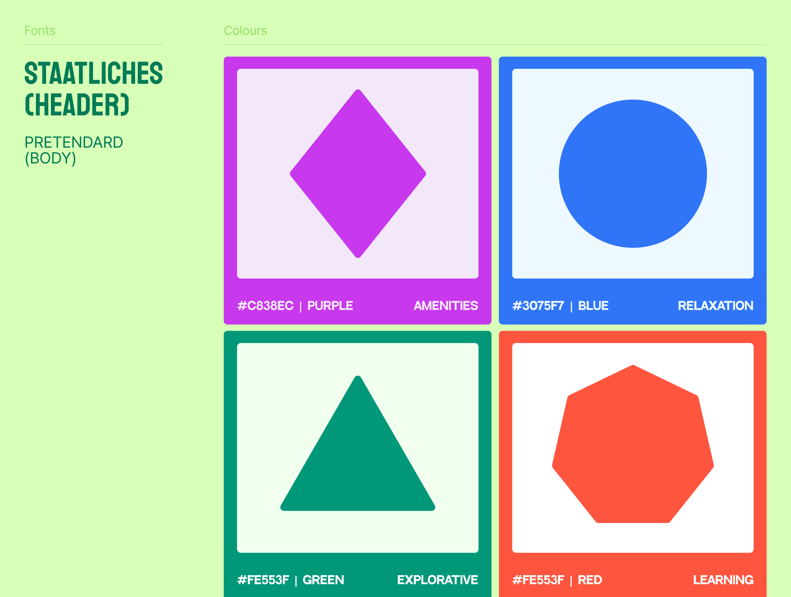

About Here is a creative studio and YouTube channel dedicated to help people learn and understand their cities. Responsible for developing the visual design, our final solution showcases 52 adventure cards highlighting different types of locations across Vancouver.
Visual Designer
Illustrator
Spring 2025
Figma
Illustrator
Keyaan
Christina
Emily
I began ideating project mediums from our consolidated research, exploring different ways to help users with city exploration. The team wanted a unique yet functional way to represent our insights and concepts.

Aiming to expand beyond About Here’s digital content and promote intentional, city-based exploration within urban spaces, we chose to create a card deck. This option is a compact and travel-friendly item. I explored initial designs, but we found these variations too detailed and visually overwhelming.

The final solution simplifies the initial designs, making the illustrations stand out at the forefront of the card. Location information is placed underneath for clear scanning.


The cards are separated by four different categories, distinguished by shape and colours. The bolder header (Staatliches) grabs the user's attention at first glance, paired with a thinner typeface for the body (Pretendard).

When drafting up the cards, it was initially difficult to decide what the deck should look like. However, after revising, certain elements were kept while others were discarded to create the final product.
While designing, I learned a big part is making sure your designs are communicated properly. Information should be clear and often times, the simple route is better than high complexity.